不思議な木
山に行くと、捻じれたり、瘤があったりする変わった形の木を良く見かけます。
山で見かけた、ちょっと変わった形をした木をまとめました。
山で見かけた、ちょっと変わった形をした木をまとめました。
| 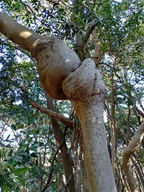 | 鋸山 | 2026.01.25 | 骨の関節のような形の木。 |
| 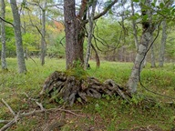 | 中禅寺湖畔 | 2025.09.28 | 木の根が横向きになっているような不思議な木。根を張った後、一度倒れてしまったのだろうか？ |
| 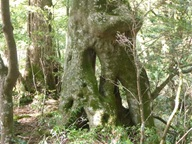 | 屋久島 | 2025.04.29 | 穴だらけの木。どこから幹でどこから根なのか？ |
| 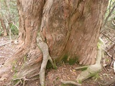 | 屋久島 | 2025.04.30 | 杉の幹の中に別の木の根がめり込んでいるのだが、中はどうなっているのだろう？ |
| 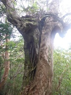 | 屋久島 | 2025.04.30 | 仲良く半分ずつ勢力を分け合った木。 |
| 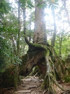 | 屋久島 | 2025.05.01 | くぐり杉。二股に分かれた木の根の間を登山道がついている。 |
| 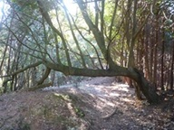 | 石尊山 | 2025.01.11 | 木の幹が途中で折れ曲がり、そこから枝か幹が縦に何本も伸びている。なんとも不思議な形の木だ。 |
| 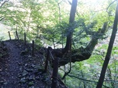 | 妙法ヶ岳 | 2024.11.03 | 真横に生える大木の脇から木が生えている。 |
| 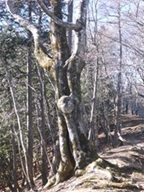 | 天目山 | 2024.02.03 | 木の真ん中に丸いこぶを持った木。真ん丸なボールを持っているように見える。蕎麦粒山～天目山の稜線上にある。 |
| 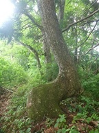 | 御前ヶ遊窟 | 2023.06.10 | 途中で折れ曲がった巨木。このような形の木はまれにみるが、ここまで大きく成長しているのは珍しい。 |
| 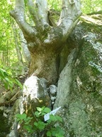 | 守屋山 | 2023.06.04 | 平成のビーナスと名付けられた木。確かに女体に見える。 |
| 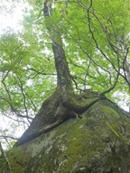 | 天城山 | 2023.05.02 | 岩にしがみついた木。木の根がスカートのようだ。 |
| 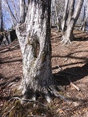 | 天祖山 | 2022.12.30 | 幹の真ん中に穴の開いた木。幹が二つに分かれた後にくっついたのだろうか？ |
| 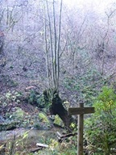 | 浅間嶺 | 2022.11.27 | 真ん中で折れた木の幹から、別の小さな新しい木が生えている。 |
| 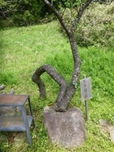 | 高川山 | 2022.05.06 | 石の上で折れ曲がった木。これ以上進めなかったので方向を変えたのだろうか？ |
| 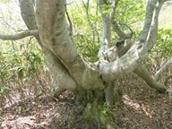 | 蒜山 | 2022.05.03 | 途中で幹がなくなる変わった形の木。 |
| 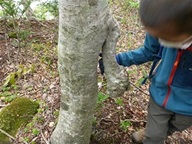 | 伯耆大山 | 2022.05.02 | 木の幹から瘤のようなものが垂れ下がっている。 |
| 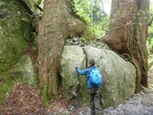 | 伯耆大山 | 2022.05.02 | 大神山神社にある杉。大きな石を2つの木の根が挟み込んでいる。 |
| 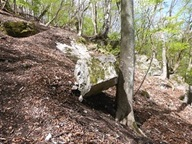 | 立処山 | 2021.04.18 | 岩が木につっかえている。いつかこの石は転げ落ちそうだ。 |
| 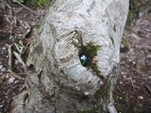 | 立処山 | 2021.04.18 | 木の穴にビー玉が埋め込まれている。木が生長して、もうビー玉を取り出すのは不可能だ。 |
| 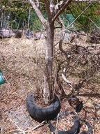 | 立処山 | 2021.04.18 | タイヤの中から木が生えている。廃屋の近くにあったが人為的なものだろうか？ |
| 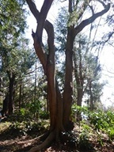 | 大洞山 | 2021.02.28 | 大きな木の幹が巻き合っている。ぐるぐる巻き合う木はあるが、大きな幹同士と言うのは珍しい。 |
| 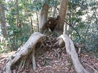 | 高尾山 | 2021.02.28 | 体育座りしている人のように見える木。 |
| 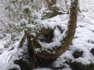 | みたらい渓谷 | 2021.02.17 | 一回転した木。 |
| 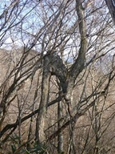 | 御正体山 | 2020.12.29 | N字形の木。途中で一度幹が折れた後、再び上に向かって伸びたのだろう。 |
| 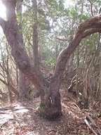 | 貫ヶ岳 | 2020.11.29 | 真ん中に穴の開いた左右対称の木。 |
 | 毛無山 | 2020.11.15 | 地面からにょっきりと木が頭を出している。木の根だろうか？ |
| 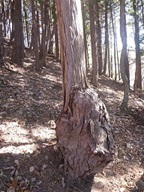 | 御場山 | 2020.11.08 | 大きな瘤を持った木。幹の2倍以上の太さだ。 |
| 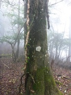 | 菰釣山 | 2020.09.13 | 木に巻き付くツルに巻き付く緑のツル。 |
| 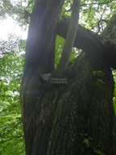 | 大菩薩峠 | 2020.07.12 | 立派な栗の木の上にコハウチワカエデの木が生えている。 |
| 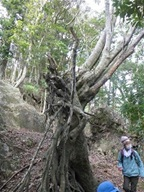 | 元清澄山 | 2020.02.24 | 木が傾いていて一部の根のみで支えている。これでも木は生きているようだ。 |
| 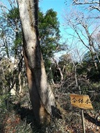 | 宝篋山 | 2020.01.05 | 合体木。全く種類の異なる2つの木が合体して成長している。どちらも仲良く大きく育っている。 |
| 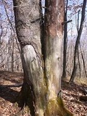 | 黒富士 | 2019.11.10 | 半分枯れて半分生きている木。左側の木は緑の葉をつけている。 |
| 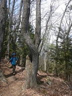 | 兜山 | 2019.04.21 | X形の木。幹が途中で交差している。 |
| 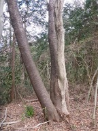 | 雪入山 | 2019.03.10 | 2種類の木が幹の真ん中で融合している。 |
| 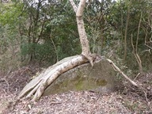 | 雪入山 | 2019.03.10 | 木の幹と見紛うような太い木の根が岩の上を這っている。 |
| 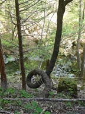 | 根本山 | 2018.04.22 | 一回転した木。途中できれいに回転している。 |
| 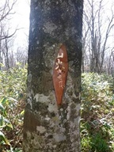 | 鹿俣山 | 2016.11.13 | 木に飲み込まれた標識。「山火事…」と書かれている。 |
| 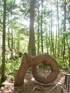 | 乗鞍高原 | 2016.08.09 | 一回転した松の木。雪の重みで幹が折れた後、持ち直して上に伸びていったらしい。 |
| 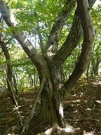 | 笹子雁ヶ腹摺山 | 2015.10.04 | 半分枯れて半分生きている木。 |
| 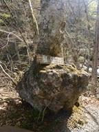 | 宇津江四十八滝 | 2015.05.02 | 足元だけやたら太い木。「展望台」の標識置き場になっている。 |
| 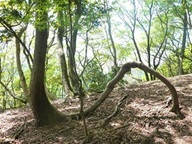 | 権現山 | 2015.05.01 | 木の根っこが波打っている。 |
| 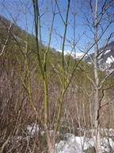 | 国道291号 | 2015.04.26 | 緑色の幹の木。あまり見かけない色合いだ。 |
| 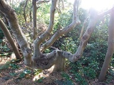 | 城ヶ崎海岸 | 2015.02.01 | 足元で幹が無くなり、水平方向に幾つも枝分かれしている。 |
 | 城ヶ崎海岸 | 2015.02.01 | 石喰いのモチノキ。石を呑みこんで木が生長したため、木の幹に幾つも石がめり込んでいる。 |
| 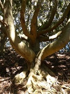 | 烏場山 | 2015.01.18 | まるでタコの足のように右に左にたくさん枝を伸ばしている。 |
| 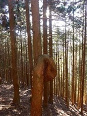 | 酉谷山 | 2015.01.11 | 植林されたスギの木が一回転している。 |
| 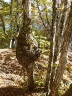 | 釈迦ヶ岳 | 2014.10.19 | 細い木に似つかわしくない大きな大きな瘤ができている。 |
| 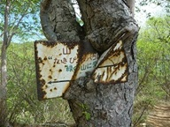 | 備前楯山 | 2014.05.17 | 木に飲み込まれた標識。少し痛々しい。 |
| 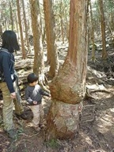 | 幕山 | 2014.03.22 | 幹の根元でぐるりと一周ねじれている檜。 |
| 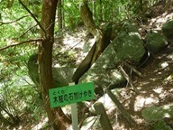 | 竜門峡 | 2013.09.14 | 木賊の石割けやき。石が見事に割れている。 |
| 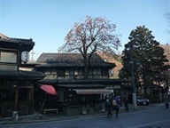 | 高尾山 | 2013.12.15 | 飲食店の屋根を柿の木が貫いている。 |
| 二子山（三浦半島） | 2013.05.18 | 形が非常に美しい木。くねり具合が素晴らしく、艶めかしい姿だ。 | |
| 三国山 | 2013.04.13 | 途中で折れ曲がった木。腰かけるのに都合が良さそうな形だが、座ると折れそうだ。 | |
| 白山 | 2012.11.24 | 横向きに大きな枝を伸ばした大木。バランスが悪そうだが、もう片方は枯れ落ちてしまったのだろうか？ | |
| 諏訪山 | 2012.10.06 | 岩にしがみついて横向きに生えている木。 | |
| 諏訪山 | 2012.10.06 | 途中で横向きに曲がった木の幹から2本の枝が上に伸びている。 | |
| 日光白根山 | 2012.06.24 | 根元からいくつも枝を伸ばした異様な姿の木。ダケカンバだろうか？ | |
| 日光白根山 | 2012.06.24 | 放射状に広がる白くて美しい木。 | |
| 鍋嵐 | 2012.05.31 | フォークの形をした木。見れば見るほど不思議な姿だ。 | |
| 大光山 | 2012.04.29 | 木の根が露出してしまったのか、変わった形をしている。 | |
| 上州三峰山 | 2012.04.15 | 木の幹が3つに分かれ、フォークの形をした松。根元の幹は太く立派な木だ。 | |
| 興福寺 | 2011.01.01 | 木のうろから竹が生えている。 | |
| 茶臼岳（南アルプス） | 2010.08.21 | 途中で折れ曲がった木。鋭角に曲がっている。 | |
| 飛竜山 | 2010.04.29 | 木の幹の真中が抜け落ちた木。落雷でも直撃したのだろうか？右側の木の幹はまだ生きているようだ。 | |
| 仙人ヶ岳 | 2010.03.27 | 枯れ木が空中にぶら下がっている。枯れた後、他の木に挟まって根元が朽ちて無くなったのだろう。 | |
| 仙人ヶ岳 | 2010.03.27 | ぐるりと一回転した木。木を押すと揺れるが、葉は付けているので生きているようだ。他の木にとっては迷惑な存在だろう。 | |
| 仙人ヶ岳 | 2010.03.27 | 3本の幹が合体し、そこから2本の幹が伸びている。木の結合部を見ると枯れているようにしか見えないが、上部は普通の木だ。 | |
| 仙人ヶ岳 | 2010.03.27 | 登山道のど真ん中に立つ大きな松の木。両手を広げて通せんぼをしているようにみえる。残念ながらこの木は枯れている。 | |
| 仙人ヶ岳 | 2010.03.27 | 何本もの幹が合体したように見える木。一本の木なのか複数の木なのかよく分からない。 | |
| 高山不動 | 2010.02.14 | 高山不動にある大イチョウ。乳と呼ばれる気根が無数に垂れ下がっている。 | |
| 沼津アルプス | 2010.02.06 | 木の幹が途中で二岐に分かれて、上部で再び合体している。上を見ると完全に一本の幹になっている。 | |
| 毛無岩 | 2009.12.04 | 捻じれている木。捻じれ方が非常に美しい。 | |
| 山ノ神バス停 | 2009.11.23 | 石割桜。木が成長して石を割ってしまった。 | |
| 扇沢 | 2009.10.10 | 一つの木に赤の葉と緑の葉が混ざっている。カラフルな木だ。 | |
| 苗場山 | 2009.09.27 | 地面に大きく露出した木の根の下を潜って登山道が付けられている。 | |
| 前黒法師岳 | 2009.05.01 | 真中で折れた枯木。微妙なバランスで乗っかっている。 | |
| 太郎山 | 2009.04.19 | 大きな瘤を2つ付けた木。瘤を持つ木はよく見かけるが、この木の瘤は特に大きい。 | |
| 篠井山 | 2009.03.28 | 岩の上に生えている木で、木の根が岩を放射状に這っている。少々不気味な姿だ。 | |
| 三頭山 | 2008.11.22 | 途中で折れ曲がった木。太くて立派な木だ。 | |
| 八紘嶺 | 2008.06.07 | 幹に穴の開いた木。なぜ穴が開いてしまったのだろう？葉をたくさんつけていたので木は元気なようだ。 | |
| 赤鞍ヶ岳 | 2008.05.18 | ぐるぐる巻いている木。巻いている木はたまに見かけるが、この木は巻いている部分が太くて立派だ。 | |
| 裏妙義 | 2008.04.26 | 穴の開いた木。のぞき穴のような真ん丸な穴が開いている。 | |
| 裏妙義 | 2008.04.26 | 電柱そっくりの木。木の材質、濡れ具合などそっくりだ。 | |
| 蛭ヶ岳 | 2007.11.24 | 幹の根元がくるっと一回転したかわいい木。 | |
| 天城山 | 2007.09.01 | X字状の異様な木。土が流れて根が露出したのだろうか？とにかく不気味な姿だ。 | |
| 鶴ヶ鳥屋山 | 2007.07.07 | 木の幹や枝（？）が捻じれている木。非常に格好いい姿だ。 | |
| 檜洞丸 | 2007.04.07 | 真ん中に穴の開いた大きな幹から、3本の小さい幹が伸びている。 |